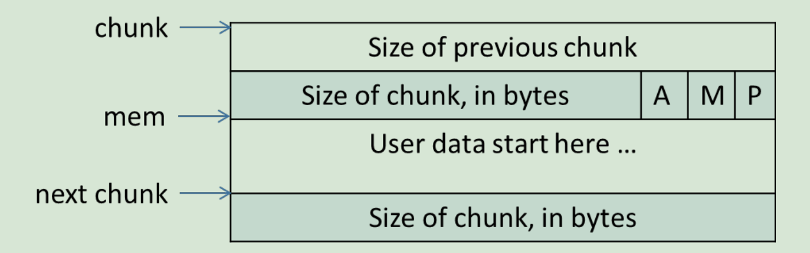

glibc
内存管理的方法
c风格的内存管理程序
池式内存管理
内存池是一种半内存管理方法。内存池帮助某些程序进行自动内存管理，这些程序会经历一些特定的阶段，而且每个阶段中都有分配给进程的特定阶段内存。
引用计数
垃圾收集
收集器没有找到的就是垃圾，可以被销毁并重新使用这些无用数据
内存管理器的设计目标
最大化兼容性
最大化可移植性
浪费最小的空间
最快的速度
最大化可调度性（以适应不同的情况）
最大化局部性(Locality)
最大化调试功能
最大化适应性
常见c内存管理程序
Doug Lea Malloc
BSD Malloc
Hoard
TCMalloc
chunk的结构
chunk格式
使用中：

P：为0时表示前一个chunk空闲，这时prev_size才有效
为1时表示前一个chunk正在使用中，prev_size无效
M：为1表示该chunk从mmap映射区域分配，否则是从heap区域分配
A：如果为1表示该chunk属于非主分配区，否则置为0
free后：

fd：指向后一个空闲指针
bk：指向前一个空闲指针
若为large bin，则多含有fd_nextsize和bk_nextsize，用于加快large bin查找最近匹配的空闲chunk
bins
small bin
free后p位置0，同时检查相邻的chunk，若空闲则合并
fast bin
free后p位不置0，不合并chunk，但在一定条件下fastbin会合并（如分配large bin，详见http://blog.chinaunix.net/uid-27767798-id-4107020.html）。
unsorted bin
使用bins数组的第一个，如果被用户释放的chunk大于max_fast或者fastbins中的空闲chunk合并后，这些chunk首先会放入unsort bin队列中。分配时若在fastbins中未找到合适的chunk，会优先在unsort bins中查找空闲的chunk，然后才查找bins。如果unsort bins不满足分配要求，malloc便会将unsort bin中的chunk加入bins，然后从bins中继续进行查找和分配过程。
Top chunk
在分配时总是在fastbins和bins之后考虑，分主分配区和非主分配区两种考虑
mmaped chunk
直接mmap申请的内存，释放时直接将内存归还操作系统，不会进入任何bin中
Last remainder
当需要分配一个small chunk，但在small bins中找不到合适的chunk时，如果last remainder chunk的大小大于所需的small chunk大小，last remainder chunk被分裂成两个chunk，其中一个chunk返回给用户，另一个chunk变成新的last remainder chunk。
分配时查找顺序
查找fast bins–>查找small bins–>合并fast bins，并入unsort bins，查找unsort bin–>把unsort bin全加入large bins中，查找large bins–>考虑top chunk